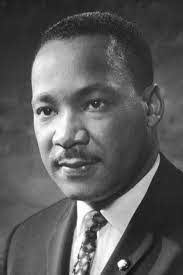

Dr. Martin Luther King, Jr.
"Along the way of life, someone must have sense enough and morality enough to cut off the chain of hate and evil. The greatest way to do that is through love. I believe firmly that love is a transforming power than can lift a whole community to new horizons of fair play, goodwill, and justice." - Dr. Martin Luther King, Jr.
Dr. King's timeline of major life events
Jan. 1929 : Martin Luther King, Jr. is born at Williams/King family home at 501 Auburn Avenue in Atlanta.
June 1953 : King Jr. marries Coretta Scott in Marion, Alabama.
June 1955 : He receives his doctorates in sytematic theology from Boston University.
Aug. 1955 : Rosa Parks, secretary of Montgomery NAACP chapter, informs King of his eleciton to executive committee.
Rosa Parks is arrested four months later for violating segragation laws.
Jan. 1956 : King's home is bombed after "Get Tough" campaign four days earlier.
Mar. 1957 : King party arrives in Gold Coast for independence celebration.
June 1958 : King and other civil rights leaders meet with Eisenhower.
Feb. 1960 : King is arrested and charged with falsifying his 1956 and 1958 Alabama state income tax returns.
Oct. 1960 : King is arrested at Atlanta sit-in, later charges are dropped but King is held for violating probation for traffic offense.
Also Presidential candidate John F. Kenedy calls Coretta Scott King to express sympathy and offer assitance; Robert Kennedy calls Georgia governor
S. Ernest Vandiver and Judge Oscar Mitchell seeking King's release on bail.
"Man’s inhumanity to man is not only perpetrated by the vitriolic actions of those who are bad. It is also perpetrated by the vitiating inaction of those who are good."
Dec. 1961 : King arrives in Albany in response to telegram from Dr. W.G. Anderson, head of Albany Movement and later arrested with more than 700 Albany protesters.
July 1962 : King with Ralph Abernathy, is convicted of leading December protest; begins serving a 45-day sentence. Leaves jail two days later; bailed by an unidentified person.
July 1962 : Calls for a Day of Penance to atone for outbreak of racial violence in Albany. Two days later, arrested at Albany city payer vigil.
Aug. 1962 : Leaves jail and agrees to halt demonstrations.
June 1963 : President Kennedy annouces new civil rights proposal and King meets with Kennedy.
Sept 1963 : Dynamite blast kills four young black girls in Birmingham, King delivers eulogy for three of the ofur children.
King and other civil rights leadersmeet with Presidnet John F. Kennedy.
July 1964 : Attends the signing of Civil Rights Act of 1964.
Dec. 1964 : King receives Nobel Peace Prize in Oslo and delivers Nobel Lecture at University of Oslo.
Feb. 1965 : King is jailed with more than two hundred others after voting rights march in Selma, Alabama.
July 1965 : King leads march to Chicago City Hall and addresses a rally sponsored by Chicago's Coordinating Council of Community Organizations (CCCO).
Aug. 1965 : King calls for halt to U.S. bombing of North Vietnam to encourage negotiated settlemant of conflict.
Dec. 1967 : Launches the Poor People's Campaign.
Apr. 1968 : Delivers final address at Bishop Charles J. Mason Temple in Memphis.
Assassinated the following day at Lorraine Motel.
You can read more about this great icon here
Check code here